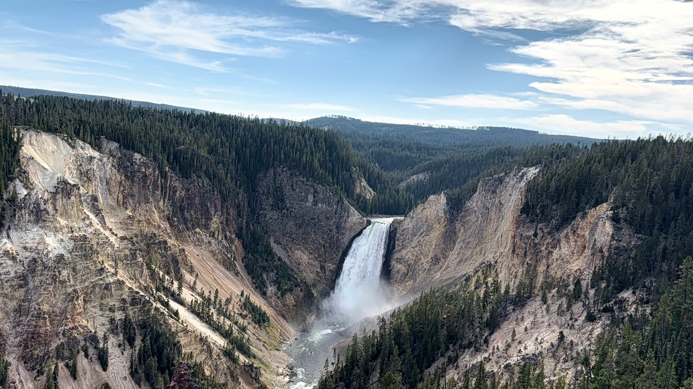

Yellowstone National Park
Wyoming · Waterfall and canyon
This was my first time at Yellowstone, and I’m so glad we stopped here to take in the view. I chose this photo because the canyon walls make even that huge waterfall look small. Seeing it in person is something I’ll always remember.